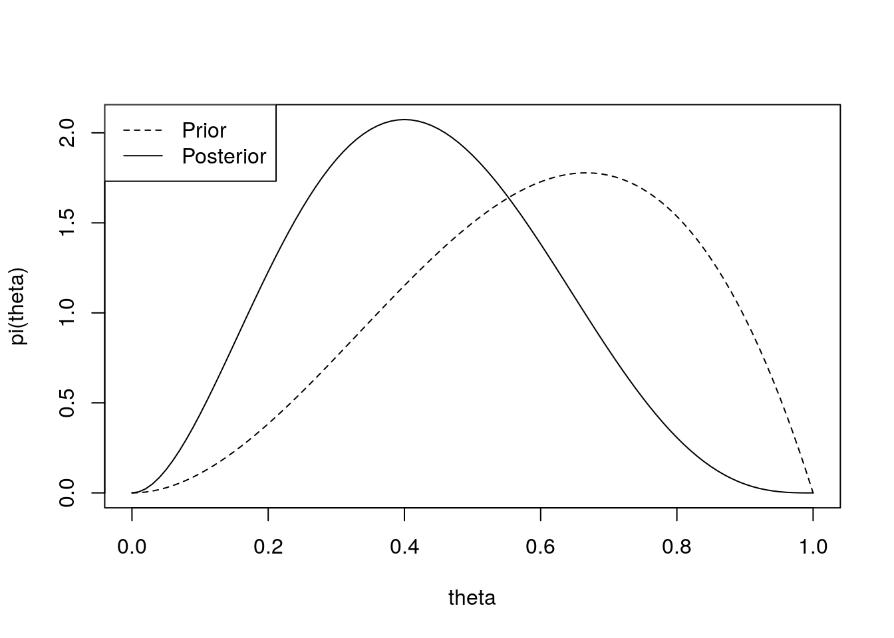

Chapter 12 Bayesian inference
12.1 Frequentist and Bayesian inference
In frequentist inference, uncertainty about a parameter value is usually expressed through a confidence interval for that parameter: an interval \([L(\bm y), U(\bm y)]\) such that \[P(L(\bm Y) \leq \theta \leq U(\bm Y)) = 1- \alpha.\] We treat \(\theta\) as fixed (but unknown), and the probabilities are in terms of the random variables \(\bm Y = (Y_1, \ldots Y_n)^T\). For instance, if we find \((1.1, 2.3)\) is a \(95 \%\) confidence interval for \(\theta\), this does not mean that \(P(1.1 \leq \theta \leq 2.3) = 0.95\), as we treat \(\theta\) as a fixed value.
By contrast, in Bayesian inference, we treat \(\theta\) as a random variable, and construct a probability distribution which summarises our belief about the likely value of a parameter \(\theta\). Our belief about which values of \(\theta\) are likely (the “posterior” distribution for \(\theta\)) is influenced by two factors: how likely the observed data \(y_1, \ldots, y_n\) were to be generated using that value of \(\theta\) (the likelihood \(L(\theta; y_1, \ldots, y_n)\)); and how likely we thought each value \(\theta\) was before conducting the experiment (the “prior” distribution for \(\theta\)).
We will give a very brief overview of Bayesian inference: see MATH3044 for more details.
12.2 Prior and posterior distributions
The first step of Bayesian inference is to express our beliefs about \(\theta\) before conducting the experiment. We specify these beliefs through a probability distribution, which is called the prior distribution. Typically \(\theta\) is a continuous random variable, so we specify the distribution through a density \(\pi(\theta)\). This idea will become clearer later on, when we consider an example.
The posterior distribution is the probability distribution for a parameter \(\theta\), conditional on the event \(\{Y_1 = y_1, Y_2 = y_2, \ldots, Y_n = y_n\}.\)
To find this distribution, we will use Bayes’ Theorem, which you have already seen in MATH1024:
Proof. By definition, \[P(B|A) = \frac{P(A \cap B)}{P(A)}, \quad \text{if $P(A) > 0$},\] so \(P(A \cap B) = P(B | A) P(A)\), which holds even if \(P(A) = 0\).
So \[\begin{align*} P(A|B) &= \frac{P(A \cap B)}{P(B)}, \quad \text{since $P(B) > 0$} \\ &= \frac{P(B | A) P(A)}{P(B)} \end{align*}\] as required.We use a continuous version of Bayes’ Theorem to construct the probability distribution for the parameters \(\theta\), given \(Y_1 = y_1, \ldots, Y_n = y_n\).
If \(Y_1, \ldots, Y_n\) have discrete distribution, the probability density for \(\theta\), given the event \(B = \{Y_1 = y_1, \ldots, Y_n = y_n\}\) is \[\begin{align*} \pi(\theta| y_1, \ldots, y_n) &= \frac{P(Y_1 = y_1, \ldots, Y_n = y_n| \theta) \pi(\theta)}{P(Y_1 = y_1, \ldots, Y_n = y_n)} \\ &= \frac{L(\theta; y_1, \ldots, y_n) \pi(\theta)}{P(Y_1 = y_1, \ldots, Y_n = y_n)} \end{align*}\]where \[P(Y_1 = y_1, \ldots, Y_n = y_1) = \int L(\theta; y_1, \ldots, y_n) \pi(\theta) d \theta,\] because \[\int \pi(\theta|y_1, \ldots, y_n) d\theta = \frac{\int L(\theta; y_1, \ldots, y_n) \pi(\theta) d\theta}{P(Y_1 = y_1, \ldots, Y_n = y_1)} = 1,\] as \(\pi(\theta|y_1, \ldots, y_n)\) is a probability density function.
The denominator \(P(Y_1 = y_1, \ldots Y_n = y_n)\) does not depend on \(\theta\), so usually we write \[\pi(\theta| y_1, \ldots, y_n) \propto L(\theta; y_1, \ldots, y_n) \pi(\theta),\] and if necessary find the constant of proportionality to make sure that \(\pi(\theta|y_1, \ldots y_n)\) integrates to \(1\). Sometimes we recognise the pdf of a known distribution, and do not need to compute the constant.
If \(Y_1, \ldots Y_n\) have continuous distribution, with p.d.f. \(f(y; \theta)\), the posterior density has the same form \[\pi(\theta | y_1, \ldots, y_n) \propto L(\theta; y_1, \ldots, y_n) \pi(\theta). \]
Example 12.1 (Bernoulli) Suppose that \(Y_1, \ldots Y_n\) are independent and identically distributed, with each \(Y_i \sim \text{Bernoulli}(\theta)\) where \(\theta\) is an unknown parameter.
To be able to conduct Bayesian inference, we need to write down a prior distribution for \(\theta\). In this case, it is convenient to choose a beta distribution \(\theta \sim \text{beta}(m_0, n_0)\) for the prior, so that \[\pi(\theta) \propto \theta^{m_0-1}(1 - \theta)^{n_0 - 1}.\] We will see that if we make this choice, then the posterior distribution will also be a beta distribution.
The likelihood function for \(\theta\) is \[L(\theta; y_1, \ldots, y_n) \prod_{i=1}^n \theta^{y_i} (1 - \theta)^{1- y_i} = \theta^{\sum_{i=1}^n y_i} (1 - \theta)^{n - \sum_{i=1}^n y_i}.\] The posterior distribution is \[\begin{align*} \pi(\theta|y_1, \ldots, y_n) &\propto L(\theta; y_1, \ldots, y_n) \pi(\theta) \\ &\propto \theta^{\sum_{i=1}^n y_i} (1 - \theta)^{n - \sum_{i=1}^n y_i} \theta^{m_0-1}(1 - \theta)^{n_0 - 1} \\ &= \theta^{\sum_{i=1}^n y_i + n_0 - 1} (1 - \theta)^{n - \sum_{i=1}^n y_i + n_0 - 1}, \end{align*}\]which is proportional to the pdf of a \(\text{beta}\left(\sum_{i=1}^n y_i + n_0, n - \sum_{i=1}^n y_i + n_0\right)\) distribution, so this is the posterior distribution. Writing \(s = \sum_{i=1}^n y_i\) for the number of observed “successes”, and \(f = n - \sum_{i=1}^n y_i\) for the number of observed “failures”, we have \[\theta|y_1, \ldots, y_n \sim \text{beta}(s + n_0, f + m_0).\] This means that we may interpret the prior distribution as equivalent to the information we would gain by seeing \(m_0\) successes and \(n_0\) failures.
In reality, in order to choose a sensible prior we need to know more information about the type of process we are modelling. For instance, suppose that our data are the outcomes of \(n\) tennis matches between two friends, Alex and Bob, where \(Y_i = 1\) denotes a victory for Alex, and \(Y_i = 0\) a victory for Bob. Suppose that Alex is 25 and healthy, whereas Bob is 52 and slightly overweight. Before the matches are played, you have some prior belief about \(\theta\), the probability that Alex will win a game of tennis against Bob. The prior distribution reflects your personal beliefs: your prior may well look quite different to another person’s prior. In this example, we might suppose \(\theta \sim \text{beta}(3, 2)\). If we then observe two matches, both won by Bob (\(s = 0\), \(f = 2\)), the posterior distribution will be \(\theta|\bm Y \sim \text{beta}(3, 4)\). In this case, the smaller values of \(\theta\) are given a higher probability in the posterior than in the prior, because of the what we have learnt from the data:curve(dbeta(x, 3, 4), 0, 1, ylab = "pi(theta)", xlab = "theta")
curve(dbeta(x, 3, 2), 0, 1, lty = 2, add = TRUE)
legend("topleft", lty = c(2, 1), c("Prior", "Posterior")) 
12.3 The posterior predictive distribution
Suppose we wanted to predict the outcome of a new random variables \(Y_{n+1}\), assumed to have the same distribution as \(Y_1, \ldots, Y_n\).
If the \(Y_i\) are discrete random variables, the posterior predictive distribution is \[P(Y_{n+1} = y | y_1, \ldots, y_n) = \int_\theta p(y; \theta) \pi(\theta | y_1, \ldots, y_n) d \theta. \]